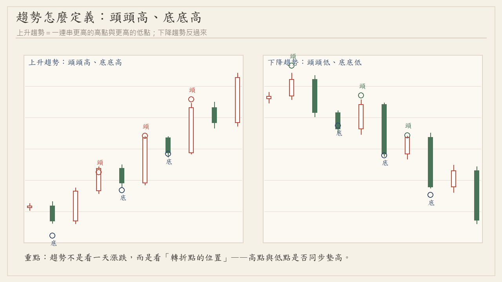
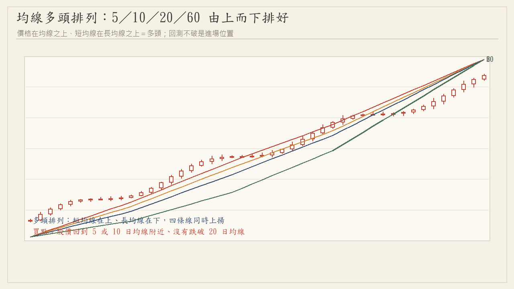
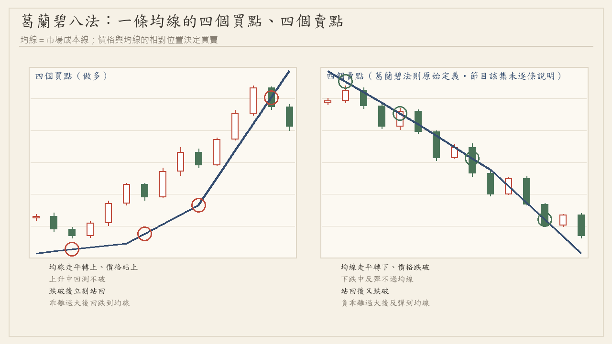
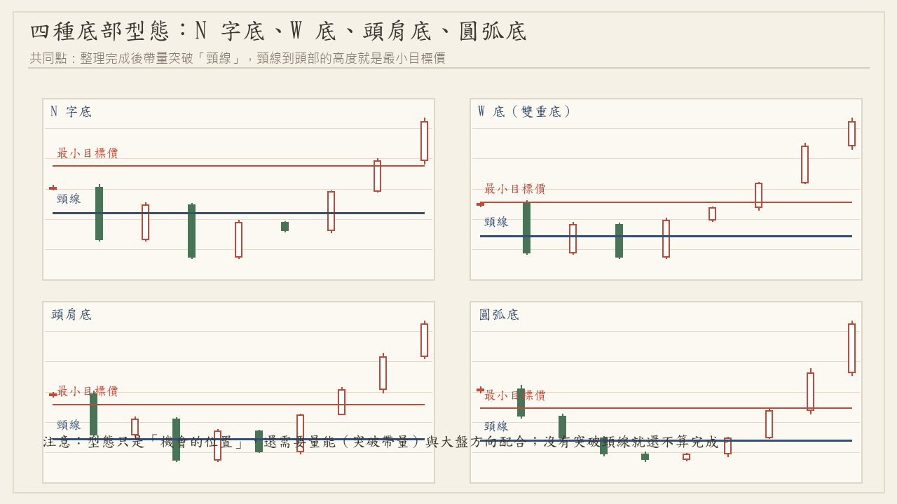
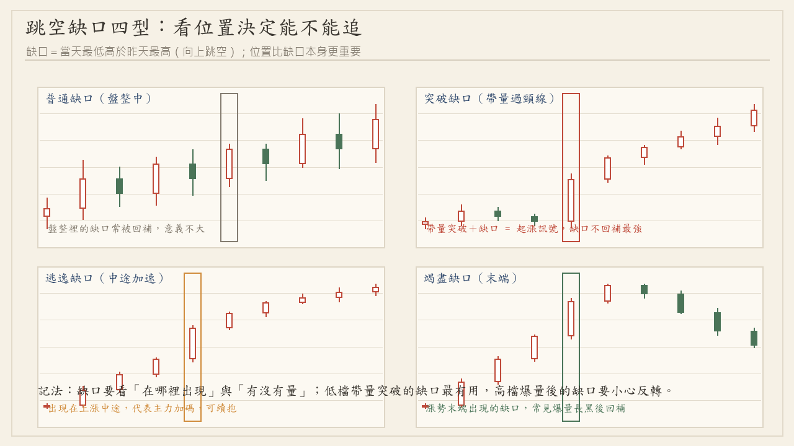
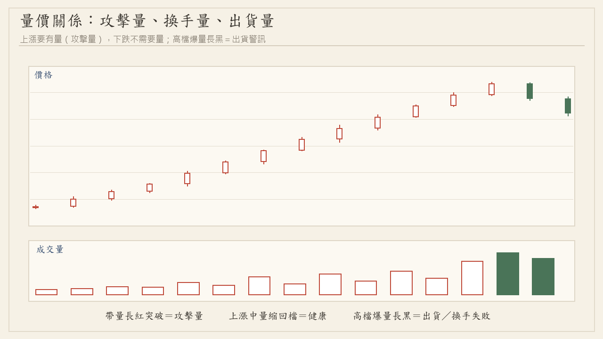
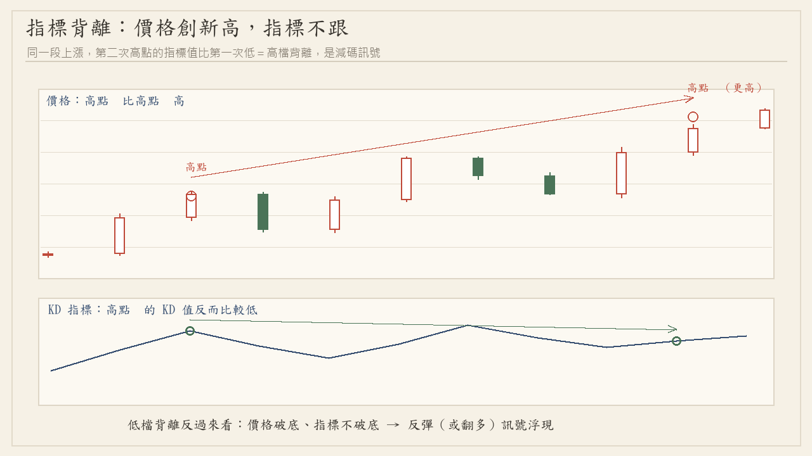
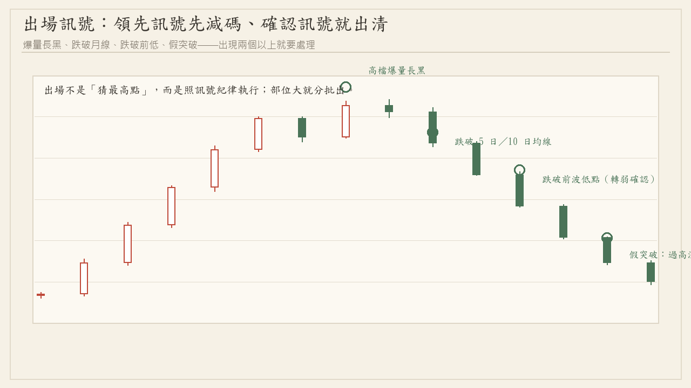

← 回股市觀察
這篇是什麼：把公開節目《理財達人秀》「飆股在線等」的技術分析教學，整理成一套前後連貫的流程。
內容根據節目的公開集數（第 1 集 KD、第 4 集 均線、第 9 集 支撐壓力、第 11 集 N 字底、第 16 集 切線、第 17 集 量價、第 20 集 葛蘭碧八法、第 29 集 選股法則、第 42 集 道氏理論、第 60 集 停利訊號）重寫，只做教學化整理、不使用節目畫面，
也不代表節目或講者立場、不構成任何投資建議（詳見頁尾說明）。
整體架構（節目的說法）：選股 → 進場 → 停損 → 停利，四個步驟環環相扣。
「你把股票選好了，實際上你已經成功一半」——選對股票，即使進得不夠精準也還有機會賺；
所以流程是從上到下：大盤 → 類股 → 個股，而不是看到紅 K 就買（第29集 [02:37]、[03:08]）。
一、先看趨勢：頭頭高、底底高

自製示意圖：一、先看趨勢：頭頭高、底底高
技術分析的第一件事不是找買點，而是先判斷現在是多頭、空頭還是盤整。
節目用最簡單的兩句話定義：多頭＝頭頭高、底底高；空頭＝頭頭低、底底低（第9集 [10:20]、第29集 [13:30]）。
做法是把最近的高低點圈起來，看「高點有沒有比前一個高點高、低點有沒有比前一個低點高」；
兩個都在墊高才叫多頭，只有一邊成立就還不算（第42集 [07:50]）。
- 道氏理論六大法則（第42集）：① 指數反映一切 ② 趨勢分多頭／空頭／盤整三種 ③ 三波段（初升、主升、末升）④ 不同市場要互相驗證（例如美股／韓國與台股、或同一家公司的不同市場）⑤ 趨勢要配合量能 ⑥ 趨勢會持續到出現反轉訊號為止。
- 三波段裡「主升段」通常不會最短、最容易賺；「末升段」變化最多、也是最容易追高被套的位置（第42集 [14:06]、[15:39]）。
- 只做多頭六個字：頭頭高、底底高；看到頭頭低（高點不再創高）就先退出（第29集 [13:30]、[17:12]）。
二、再看位置：多頭其實只有兩個買點
很多人賠錢不是選錯股票，是買在錯的位置。節目反覆強調：多頭架構裡的買點只有兩種（第4集 [04:37]、第29集 [20:17]）：
① 回後買上漲
漲一段後回檔，回檔不能跌破前低、也不能跌破月線；等回檔後
出現「紅 K 站上 5 日均線、且收盤過昨天最高點」再進場。
② 盤整突破
橫向整理一段後帶量突破整理區，量能要是昨天的 1.3 倍以上
（攻擊量），突破後回測不破就是第二個位置。
進場的確認方式：收盤前（節目說大約 13:20～13:25）看那根紅 K 是否成立再決定，新手不要盤中就衝進去（第4集 [25:51]）。
- 進場當下就要決定「做長還是做短」——是用來決定出場依據的，不是等賠錢才想（第4集 [17:33]）。
- 回檔深的股票較弱、回檔淺的（回檔不到漲幅 1/3）較強；跌破前低就是低低低，趨勢已改（第11集 [27:20]、第29集 [20:48]）。
三、均線：市場的平均成本線

自製示意圖：三、均線：市場的平均成本線
均線就是「這幾天買進的人的平均成本」（第4集 [08:47]）。節目用的參數很標準：5、10、20（月線）、60（季線）、120、240 日（第4集 [10:21]）。
判斷多空的關鍵是月線（20 日）：月線之上只做多、月線之下只做空（第4集 [13:58]、第60集 [08:51]）。
- 三線多排：5、10、20 由上而下排好、且都向上，是最基本的多頭條件；再加上季線叫「四線多排」（第4集 [18:03]、第29集 [20:17]）。
- 月線下彎就趕快跑；跌破月線一定要處理，短線跌破 5 日／10 日線就先減碼（第4集 [07:13]、[29:28]）。
- 站上哪條均線進場，就跌破哪條均線出場——用 5 日均線進場卻等跌破月線才賣，是最常見的紀律錯誤（第4集 [32:03]）。
- 盤整時均線會失效（多空都容易被掃），但「盤整突破」反而是好位置（第4集 [28:55]）。
四、葛蘭碧八法：一條線的四個買點

自製示意圖：四、葛蘭碧八法：一條線的四個買點
葛蘭碧（Granville）在 1960 年代提出以均線為核心的八個法則＝四個買點＋四個賣點（第20集 [02:32]、[08:44]）。
節目那一集只細講買點，但四個買點的共同三條件很清楚：均線向上 ＋ 股價站回均線 ＋ 有量（第20集 [31:37]）。
- 買點 1：股價由均線下站上均線，且均線已向上、帶量。此時未必是多頭架構，先試單，賺 2～3 天就跑（第20集 [15:26]）。
- 買點 2：多頭中回測均線、均線撐住後放量再漲——就是「回後買上漲」，最容易看懂（第20集 [16:29]、[24:18]）。
- 買點 3：跌破均線後又站回，而且均線仍向上的「慣性」會把股價拉回來；最好三天內站回，拖太久均線會下彎（第20集 [22:15]、[22:47]）。
- 買點 4：跌破月線且負乖離達 15% 以上（跌太遠了），要等看到紅 K、過昨天高點才搶反彈，不能買正在下跌的（第20集 [24:50]、[26:57]）。
- 最常被漏掉的條件：只看「站上均線」卻沒看「均線要向上」——均線向下的股票站上去也不能買（第20集 [14:24]）。
- 關於賣點：節目那一集只細講四個買點，四個賣點沒有逐條說明；下圖右側的賣點是葛蘭碧法則的原始定義（供對照），不是該集節目的內容。
五、支撐與壓力：一線的兩面
支撐與壓力是技術分析的兩大精華之一（另一個是趨勢）（第9集 [02:04]）。它們是同一條線的兩面：
站上就變支撐、跌破就變壓力（第9集 [08:16]、[33:00]）。
- 畫線的四個地方：大量 K 線（大量紅 K 取低點、大量黑 K 取高點，都不該被跌破）、盤整區（盤整兩三週的區間最有效）、均線（5／10／20 均、月季線）、切線（第9集 [19:07]、[24:16]、[25:17]、[26:18]）。
- 確認要等第二天：碰到支撐或壓力後，看隔天的 K 線表態才決定要不要動作（第9集 [06:45]）。
- 強弱有別：20 日均線的支撐強度重於 5 日均線（第9集 [25:47]）；同一位置如果同時是盤整區＋月線＋上升切線，力量最強（第9集 [27:20]）。
- 切線（趨勢線）：多頭連兩個低點畫上升切線、空頭連兩個高點畫下降切線；出新低就不斷重畫，最後一條叫「最後切線」，跌破大部分該離場（第16集 [05:11]、[14:38]）。
- 切線角度越陡＝股票越強，角度變平就是轉弱（但還不能直接做空）（第16集 [13:33]、[14:06]）。
六、型態：找機會也順便算目標價

自製示意圖：六、型態：找機會也順便算目標價
型態是「盤整後固定出現的圖形」，節目稱它是統計出來的大數法則：約九成會走出目標，但仍有一成失敗，所以停損一定要做（第11集 [03:35]、[04:38]）。
型態分兩類：反轉（底部轉多、頭部轉空）與續勢（整理後續走原方向）（第11集 [08:44]）。學型態有兩個目的：找機會、算目標價。
- N 字底是節目評價最高的底部型態：第一隻腳（空頭反彈，低檔大量長紅、站上 5 日均線）＋ 第二隻腳（回檔不破前低，且回跌幅度不超過前段漲幅的 1/2），突破前波高點（頸線）確認（第11集 [13:56]、[14:58]）。
- 目標價＝等幅：第一隻腳漲多少，第二隻腳就抓多少。例：100 漲到 120（漲 20），回檔到約 110 起漲，目標 110＋20＝130（第11集 [20:07]）。
- 節目說 N 字底勝率約九成，W 底約四成，關鍵差在「第二隻腳是高腳還是低腳」；W 底要成功需要均線多排配合（第11集 [11:18]、[12:20]）。
- 停損：試單者守回檔低點；確認後買進者守「買進那根紅 K 的低點」，收盤跌破才算（第11集 [19:05]、[21:41]）。
- 目標價到了、或「第二天不漲」就出場；走完之後就回到多頭的均線操作，不再算目標價（第11集 [24:45]、[25:16]）。
七、跳空缺口：看位置，不是看缺口

自製示意圖：七、跳空缺口：看位置，不是看缺口
缺口＝今天最低價高於昨天最高價（向上跳空）。節目的重點是「缺口出現在哪裡比缺口本身重要」：
盤整中的缺口常被回補、意義不大；低檔帶量突破的缺口最有用；高檔爆量後出現的缺口要小心反轉（第10、13、51 集主題）。
- 突破缺口：帶量突破頸線時出現，缺口不回補最強。
- 逃逸缺口：上漲中途出現，代表主力加碼，可續抱。
- 竭盡缺口：漲勢末端出現，常見爆量長黑後被回補。
- 缺口要看「有沒有量」與「隔天 K 棒的方向」，單獨一個缺口不構成買賣理由。
八、量價關係：攻擊量與出貨量

自製示意圖：八、量價關係：攻擊量與出貨量
量是「相對的」，不是絕對數字（第17集 [00:00]）。節目用「均量」當基準：5 日均量是基本量，
放量約 1.2～1.3 倍、爆量約 2 倍以上（第17集 [12:27]、[13:30]）。看量一定要配四個東西：趨勢 → 位置 → 當天漲跌 → 隔天股價（第17集 [04:43]）。
- 低檔爆大量：隔天不跌（收紅 K）就可能是換手成功、準備反彈（第17集 [15:32]）。
- 高檔爆大量：如果隔天股價不漲，多半是出貨，要準備回檔（第17集 [16:35]、[26:55]）。
- 「平地一聲雷」＝盤整突破同時爆量，是最漂亮的起漲組合（第17集 [17:36]）。
- 價漲量縮是背離訊號、容易回檔；空頭時不用看量，有量沒量都會跌（第17集 [33:08]、[10:54]）。
- 出貨判斷：高檔價漲量增、但量與價都不再創新高＝主力在跑，要賣（第17集 [26:55]）。
九、指標：加分項，不是主角

自製示意圖：九、指標：加分項，不是主角
節目對指標的定位很清楚：指標是「加分用」，不能拿來判斷多空（第1集 [18:16]、[33:12]）。多空看趨勢與均線，指標只是幫你選位置。
- KD：以 9 天為比較基準，0～100 之間；低於 20 算超跌、高於 80 算過熱（第1集 [09:25]、[12:00]）。
- 黃金交叉＝快線 K 向上穿過慢線 D、且兩線都向上；低檔（約 50）交叉常是起漲點，不一定回到 20；強勢股甚至 50～60 就交叉（第1集 [16:10]、[21:51]）。
- 鈍化：高檔鈍化＝兩線卡在 80～100 兩三天不下來；低檔鈍化＝卡在 0～20 超過三天。鈍化時不要看指標，回到股價與紀律操作（第1集 [31:11]、[31:41]）。
- 背離：價格創新高、指標沒跟著創新高＝高檔背離，是減碼訊號；低檔反過來看（第42、47 集主題）。
- MACD：做為進場的第六個確認條件（黃金交叉、綠轉紅、紅柱延長）（第29集 [22:21]）。
- 盤整時指標失準：黃金交叉、死亡交叉都容易兩邊被打（第1集 [30:06]）。
十、出場與停利：訊號出現就執行

自製示意圖：十、出場與停利：訊號出現就執行
節目的說法是「會賣才是高手」：不要想賣最高點，訊號出現、把賺的入袋（第60集 [01:34]、[12:29]）。前提是買在起漲位置，才有 10～20% 的停利空間。
- 停利訊號（一）：沿 5 日均線上漲、獲利超過 10%，跌破 5 日均線就賣；沒跌破就繼續抱（第60集 [02:37]）。
- 停利訊號（二）：高檔連續兩天出大量，這兩天的低點被跌破就離開——代表主力已經跑掉，容易「一日反轉」（第60集 [05:44]、[06:15]）。
- 停利訊號（三）：高檔爆量長黑 K。沒跌破昨天紅 K 先賣一半；如果長黑直接吃掉昨天的紅 K（長黑吞噬）＝全部出清，這是「一日反轉最嚴重的 K 線訊號」（第60集 [09:53]、[10:26]）。
- 停損紀律：進場那根紅 K 的低點不可跌破；短線破 5 均、中線破 10 均、長線破月線（第4集 [26:52]、第17集 [19:40]）。
- 賣掉之後如果又彈上來，不代表賣錯——上面壓著大量，量過不去就不該追（第60集 [07:17]）。
十一、進場前的檢核表（照順序問自己）
節目裡的成功率說法：前三個條件大約六成、加上價量約七成、六個條件都順到八成（第29集 [18:44]、[22:21]）。
這是節目的經驗值，不是保證，也不是我們的統計。
十三、怎麼跟本站的每日觀察一起用
- 股市觀察首頁：每個交易日收盤後的觀察報告，逐檔列出技術條件（站上月線、底底高、頭頭高、突破頸線…）。
- 2026/09/15 收盤後觀察：含「好條件最多／不好條件最多」排行，可以對照這篇的檢核表看。
- 每日觀察裡的條件是用公開資料可重算的版本，不含主觀判斷；這篇是方法論，兩者搭配使用。
來源與聲明：本頁整理自公開節目《理財達人秀》「飆股在線等」的公開集數（第 1、4、9、11、16、17、20、29、42、60 集），
以教學化重寫方式呈現，並標註出處集數與時間點供查證；未使用任何節目畫面、影片或他人的教材內容。
為避免混淆，本頁一律以「朱老師」「K神」等公開稱謂指稱節目講者，不代表講者或電視台立場，也沒有任何合作或背書關係。
所有勝率、報酬率數字都是節目中的說法，不是本頁實測結果。本頁為技術分析方法的整理，
不構成投資建議、不報牌、不預測行情、不提供買賣決策；投資有風險，請自行判斷並自負盈虧。
← 回股市觀察